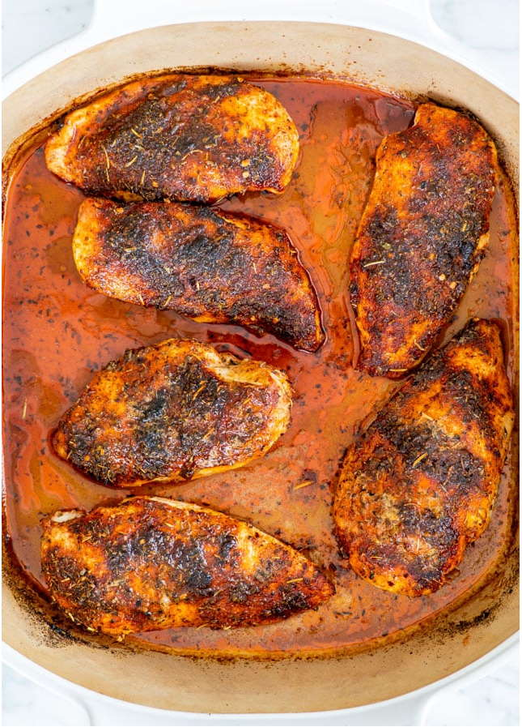

Baked Chicken Breast

This Baked Chicken Breast is tender on the inside, perfectly seasoned and golden on the outside.
Heat the oven to 450 F degrees.
1 tbspsmoked paprika or regular paprika1 tbspItalian seasoning1 tsponion powder1 tspgarlic powder¼ tspred pepper flakes½ tspsalt1 tsppepper freshly ground
In a small bowl whisk all the dry rub ingredients together; set aside.
2 tbspolive oil3 lbschicken breast boneless and skinless (about 6)
Pat the chicken breast dry with a paper towel. Drizzle about 1 tbsp of olive oil over the bottom of a baking dish and brush it over the bottom to cover the entire surface. Place the chicken breasts in the baking dish and brush the remaining olive oil over both sides of the chicken.
Sprinkle half of the rub over one side of the chicken breasts then flip them over and sprinkle the other side with the remaining rub. Use your hands if necessary to make sure the entire breasts are seasoned.
2 tbspbutter unsalted, cut into 6 equal size pieces
Place a piece of butter on each chicken breast.
Transfer the baking dish to the oven and bake for 18 to 25 minutes. The baking time could differ depending on the thickness of the chicken breast. The breast is cooked when it’s completely opaque all the way through and registers 165 to 170 F on an instant-read thermometer.
Remove the chicken from the oven and let it rest for about 5 minutes before serving. Serve with your favorite side dish.